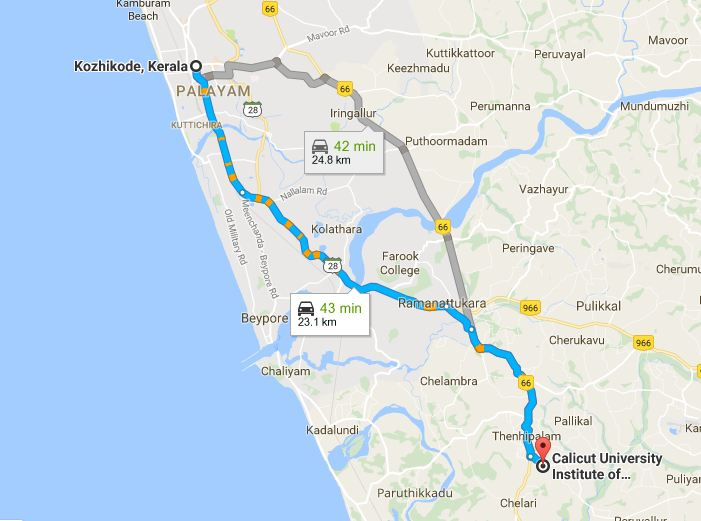

ADDRESS:
Institute Of Engineering And Technology,
Calicut University,
Kohinoor,
Thenhipalam P O,
Malappuram

Institute Of Engineering And Technology,
Calicut University,
Kohinoor,
Thenhipalam P O,
Malappuram
Calicut University Institute of Engineering and Technology (CUIET)
is a Self-Financing Engineering College run by The University of Calicut is situated in Thenhipalam. It is 23km south of Calicut on Calicut Thrissur Road.
Prayer meeting:Have prayer meeting on Tuesdays at Convent near St.Mary's Church.Present cordinator is Abraham.
How to reach:Get Thrissur or Kuttipuram bus from New bus stand and get down at Thenhipalam bus stop for reaching college.
Possibility:Need support from subregion to make prayer meeting strong and regular. Can reach out to Devaki Amma College and Vedhavyasa Engineering College and build contacts